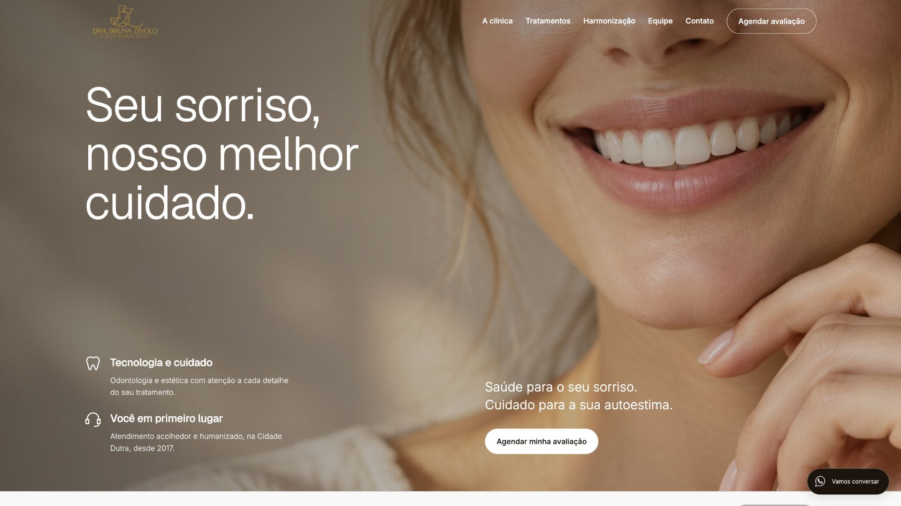
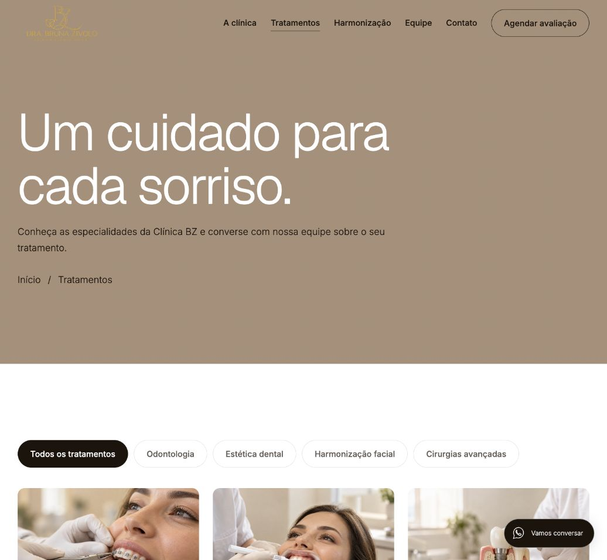
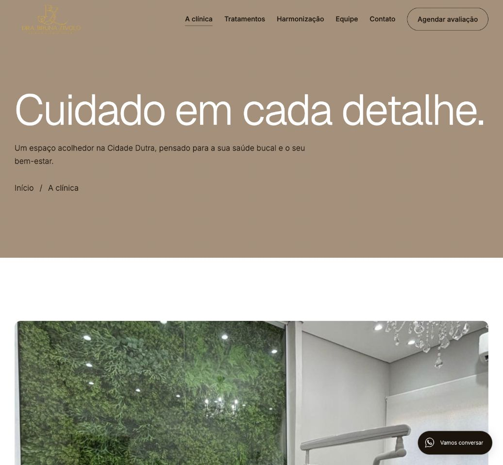

Tratamentos, equipe e contato em uma experiência completa
Um site com 22 páginas para apresentar a Clínica BZ, explorar especialidades e iniciar uma conversa com a equipe.
Páginas de tratamentos, filtros de especialidades, galeria com ampliação e comparadores de antes e depois ajudam o visitante a conhecer os cuidados disponíveis. Os botões de agendamento abrem o WhatsApp; a equipe da clínica confirma o atendimento.


